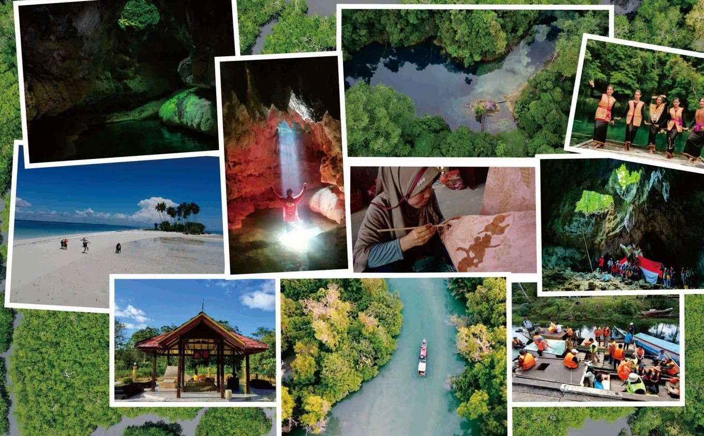

Goa
Muhun Tunggal
Panorama alam dengan keutuhan dan jenis-jenis pohon asli Kalimantan
Telaga air tawar berwarna jernih kebiruan yang sangat menengkan bagi siapapun yang datang dan menikmatinya
Panorama alam dengan keutuhan dan jenis-jenis pohon asli Kalimantan
Hutan Mangrove yang luas sebesar 3.000 Ha dengan kondisi yang masih terjaga keasrian dan Kelestariannya
Goa yang memiliki banyak stalaktit dan stalakmid yang indah dan memiliki tempat spot foto dengan cahaya yang menembus masuk kedalam goa
Kampung Tembudan merupakan salah satu kampung yang terletak dikecamatan Batu Putih kabupaten Berau Provinsi Kalimantan Timur. Arti nama Tembudan menurut bahasa asli masyarakat setempat memiliki makna “tempat pertemuan” atau “tempat perkumpulan”.
Sebelum dinamakan Kampung Tembudan, dahulu kampung ini terdiri dari beberapa wilayah atau kelompok perkampungan kecil dan pemukiman masyarakatnya pernah beberapa kali berpindah-pindah. Setiap masyarakat asli perkampungan kecil dan kelompoknya mewarisi bekas perkampungan lama dan hutan penjelajahan secara turun temurun dan secara garis besarnya ada 5 (lima) wilayah atau kelompok perkampungan, yaitu Perkampungan Jantui, Perkampungan Kuping Inyigit, Perkampungan Limbuh Danum Putung, Perkampungan Bual-Bual, dan Perkampungan Linsang Labuan Cermin.
Lokasi

Source : Pesona Indonesia
Kain batik Tembudan memiliki ciri khusus karena pewarna yang digunakan dari mangrove
Gantungan kunci yang terbuat dari kayu dengan bentuk dan motif yang khas
Berbagai macam bentuk anyaman rotan
Galeri dan spot foto wisata alam di Kampung Tembudan


Salah satu destinasi wisata yang worth it untuk dikunjungi

Hidden gem dari Kabupaten Berau yang wajib untuk dikunjungi

Selain destinasi wisatanya yang menarik, produk-produknya juga memiliki kualitas dan ciri khas yang unik

Ngga perlu jauh-jauh keluar negeri, datang ke Telaga Biru Tulung Ni'Lenggo aja udah berasa di luar negeri loh!

Rekomen banget untuk dikunjungi!
{kind=link}
{kind=link}
{kind=link}
{kind=link}
{kind=link}
{kind=link}
{kind=link}
{kind=link}
{kind=link}
{kind=link}
{kind=link}